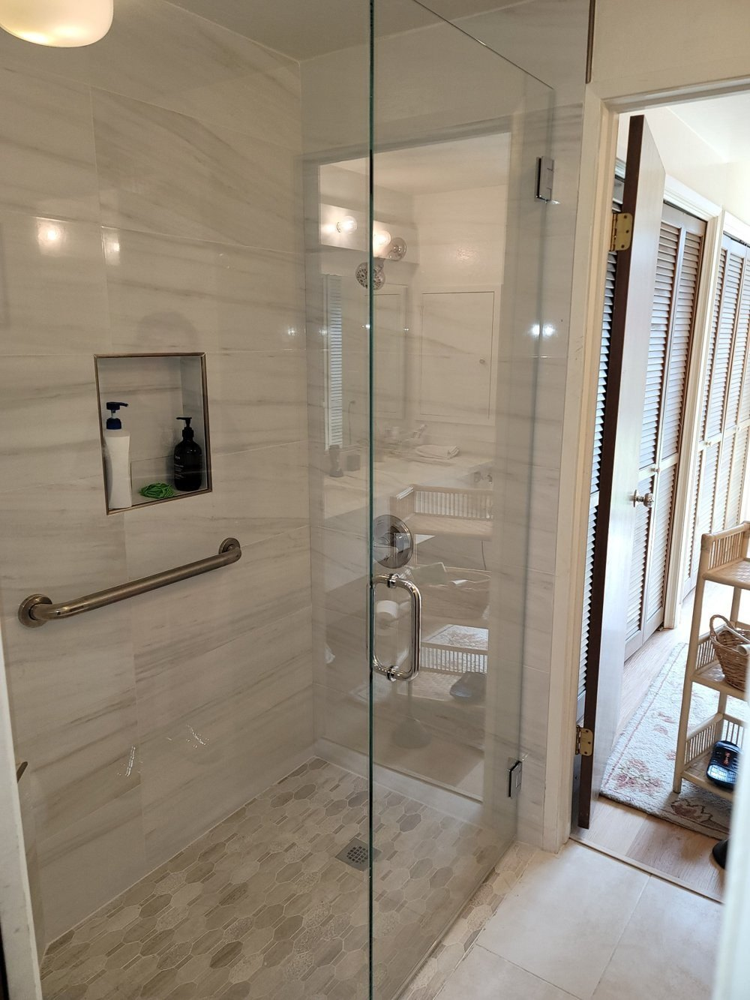
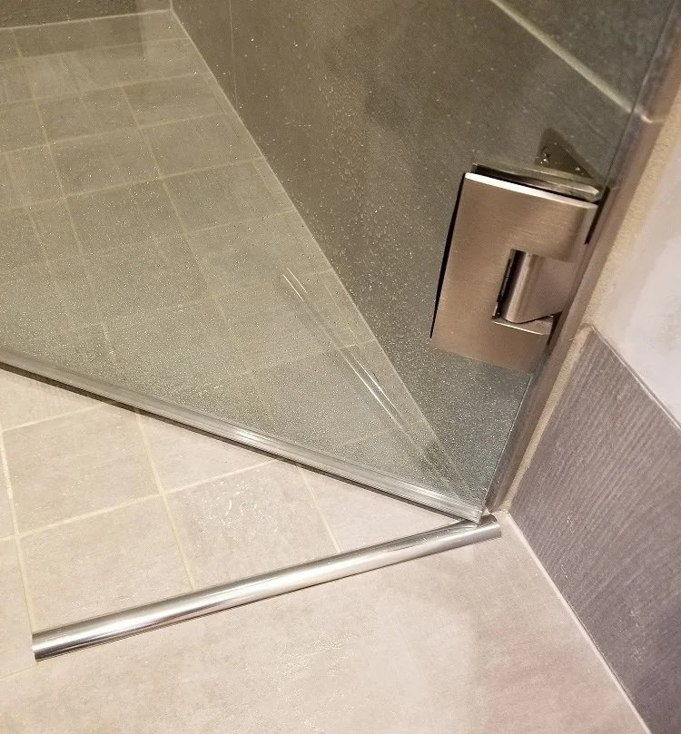
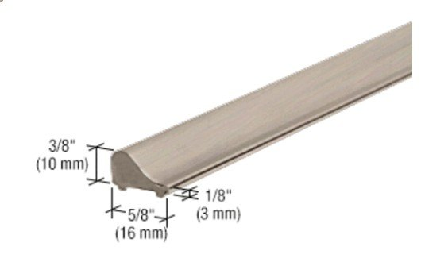

Before You Choose a Curbless Shower, Plan for the Door, Not Just the Drain
A curbless shower looks clean and open, and most of the planning goes into the drain and the tile slope. The glass door is usually an afterthought, but it is the one part that has to move, seal and keep water in once the floor is finished. Small decisions in the floor decide how that door behaves for the next twenty years.

What to expect with a curbless shower door
- The flexible sweep contacts the floor near the closed position, so the floor in the swing path must be nearly flat and must not rise into the sweep as the door opens.
- You will feel the sweep contact the floor as the door closes. That contact is what seals the bottom edge.
- Floor rise as small as 1/32" in the swing path can make the door stick.
- The high point of the floor belongs under the closed door, not wherever the tile setter finds it convenient.
- I suggest a metal water dam for every curbless door, and some designs cannot be built without one.
- Plan the door before the tile goes in, not after.
Why a curbless shower door feels different
A traditional shower curb is 4" to 7" wide. As the door begins to open, the bottom sweep travels across that width, and once it clears the curb the door swings freely.
In a curbless shower there is no curb to clear. The door is hung just above the tile, and a double-fin sweep on the bottom edge rides on the floor near the closed position. If the floor has not been planned for the door, the sweep drags through the whole swing. When the floor is right, the fins glide and flex and the door closes with light, even contact. The double fins flex in one direction as the door opens and have to reverse as it closes. If the floor is not flat, that is where they catch, and you feel it as the door sticking on its way closed.
A small change in the floor makes a big difference
A 7/16" gap under the glass is the standard allowance built into the design software of CRL and other manufacturers. On a flat floor I set the door to that gap, and the sweep makes good contact with the tile and seals along its length.
The tolerance is tight. These are working examples from my field experience, and the sweep profile and the actual shape of the floor affect the result. If the tile rises even 1/32" as the door swings away from the closed position, the sweep is pushed harder into the floor and the door starts to stick. At a rise of 1/4", a metal water dam becomes necessary.
On one recent job, the tile rose 1/2" by the time the door was about 75° open. To clear it, the gap under the door had to be 3/4" instead of 7/16". A wider gap clears the floor, but it also leaves more room for water to escape, which is why the floor shape and the water dam have to be planned together.
Where the high point of the floor goes
The floor has to slope toward the drain, so the question is where the high point sits. I ask for a flat apex about 2" to 3" wide, centered directly under the spot where the door will sit when closed. From there the tile must not rise as it moves away from the door. Ideally it drops slightly, up to about 1/8", over roughly 30" to the full-open position of the door.
The purpose of that drop is to minimize the sweep's contact with the floor, or eliminate it. The sweep should touch only within about the first 5° of the door's travel from closed. Past that, the door should open with no contact at all.
When the tile is set this way, a water dam is not necessary. I have seen it done correctly about once in my career, which is why I suggest a water dam for every curbless shower. If the high point is anywhere else, the sweep drags through the swing, and water can find its way out through the small gaps in a frameless seal. Work out the exact layout and clearance with the glass installer before the tile is set.
What about a water dam?
I suggest a metal water dam for every curbless shower door. I will not push hard on it, but there will be times I cannot build the door without one, for the reasons in this article. The sweep seals the bottom edge, but the dam gives water a physical edge to stop at, and it covers the small differences that are hard to avoid in a finished tile floor.
There are two common ways to do it. One is a metal bar on the floor directly under the door, as in the photo below.

The other is a low tapered threshold that sits on the finished floor. CRL makes one, the S1L001 Frameless Shower Door Tapered Threshold. It is 3/8" high and 5/8" wide at the base.

A note about finishes. Shower door hardware comes in a wide range of finishes. CRL offers more than 16 standard finishes across its full line, but an individual water dam may come in only four to six colors, commonly brushed nickel, brass, chrome, black or oil-rubbed bronze, depending on the product. A water dam may not be an exact match for the hinges and handle you choose. Most homeowners would rather have no threshold at all, and a finish mismatch makes it stand out, so planning ahead is how you get a design that works and looks right.
Water dams also differ in shape and height. CRL's S1L001, SDT980 and WBSB are examples. Settle the profile, the finish and how the sweep will work with it before you make your final selections, and before the tile is set, so the floor and the dam are built to work together.
Do not forget the bathmat
Without a water dam, plan on keeping the bathmat outside the door's swing. The sweep needs to contact the floor near the closed position, so a mat at the opening would interfere with the door.
With a water dam and the right floor conditions, a very thin mat may fit beneath the door swing. In the example I work from there is about 1/4" of clearance, but check the actual clearance before choosing one.
Before the tile goes in
These are the points I settle with the tile contractor and general contractor before the floor is finished:
- Mark where the door will sit when closed, and where it will be at full open, before the tile is set.
- Place the apex of the slope, about 2" to 3" wide, centered directly under the closed door.
- Keep the tile from rising along the swing path. Ideally it drops slightly, up to about 1/8", away from the closed door.
- Choose the water dam, bar or tapered threshold, and its finish.
- Send the shower door installer a photo that captures the whole space and all its nuances, for verification.
- Send an updated photo just before the tile goes in. An overlooked detail often changes where the homeowner or contractor thought the door was going.
- Confirm the gap under the door, 7/16" on a flat floor, wider only if the floor requires it.
- If the homeowner wants a mat at the opening, confirm there is a water dam and measure the clearance under the swing.
The conversation is easier before the tile is finished
A curbless shower can work beautifully with a frameless glass door. It just needs a few decisions made while the floor can still be shaped. If you are planning one, call me before the tile is set and we will walk through the door, the floor and the water dam together.